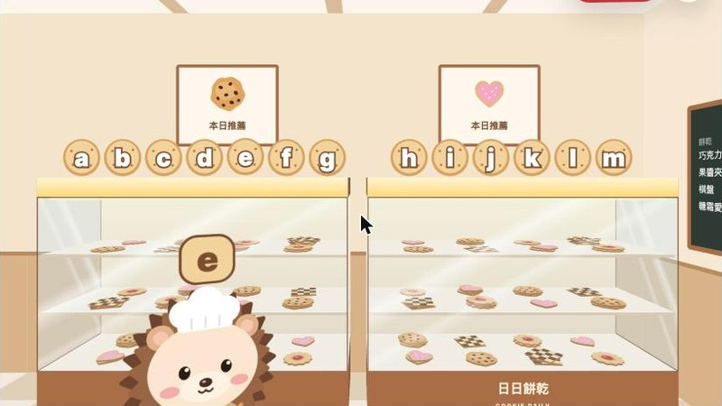

小遊戲
英文單字填空的小遊戲，字母就是店裡的餅乾和麵包。點店門走進「日日餅乾」，導覽會帶你看 a–m 的字母餅乾、 n–z 的字母麵包放在哪裡，再翻一翻遊戲說明書就開始營業：15 位顧客輪流到櫃台前出一個挖空的英文單字， 找到缺的字母、點那個餅乾或麵包，小栗就會去拿回來補上。
營業中
0:30
營業結束！
暫停
遊戲說明

1 遊戲目標
顧客走到櫃台前，用中文說他想要的東西。把英文單字缺的字母補齊，他就會拿著紙袋開心回家。一局有 15 位顧客。

2 看懂題目
題目卡上有中文提示和挖空的英文單字，橘色框是現在要補的字母。第一個字母一定會給你；按 🔊 可以聽單字怎麼唸。

3 字母在哪裡
a 到 m 是左邊展示櫃頂上的字母餅乾，n 到 z 是右邊麵包架上的字母麵包，都照字母順序排好。

4 點商品，小栗去拿
按「餅乾櫃」或「麵包架」轉過去，點缺的那個字母。點對了，小栗會走過去拿回來補上；點錯了商品會搖一搖，再找一次就好。

5 時鐘與設定
右上角的時鐘在倒數，時間快到時會晃動。按齒輪可以暫停，選擇繼續、重新開始、看說明或回到主畫面。
1 / 5
做法重點
| 部位 | 做法 |
|---|---|
| 店面 | 店面的牆放在 Depth 600，把烘焙店原本開著的門口往外推，中間多一段前廳；烘焙店頁的四個鏡頭都還在店裡，進店後照樣用 |
| 門窗 | 一整片牆用 clip-path 挖三個洞（evenodd：外框裡再描一圈就變成洞），洞後面放半透明玻璃與展示台，看得到店裡 |
| 店門 | 一顆按鈕，轉軸放在左緣；打開時 Y 從 0 轉到 100°，往店裡推開。走進店之後門在背後關上 |
| 遮雨棚 | 斜斜往外伸的條紋平面（轉 X 約 63°），前緣再掛一條立著的波浪邊，波浪用 mask 剪 |
| 走進店裡 | 鏡頭從人行道直直走到門內，四個鏡頭數字一起補間；高度一路都在門框以下，不會穿過門框 |
| 英文填字 | 每局抽 15 個不重複的生活單字，第一個字母保留，依長度挖 1～3 個空格；每個空格給 3 個字母選，干擾字母跟正確答案同是母音或子音。🔊 用瀏覽器內建的語音合成唸出單字 |
| 顧客 | 放在自己的一層，疊在店裡所有東西上面；走位是改擺放位置的 CSS 變數（--l、--tz），由 transition 補間 |
| 手機版 | 舞台撐滿螢幕寬、加高；店外的鏡頭站近一點，說明卡蓋在下面的地板上，按鈕至少 44 高 |